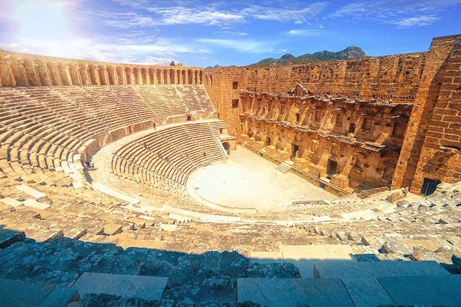

En
En  Ar
Ar AntalyaAntalya is a city located in the Mediterranean region of Turkey.
Antalya'nın Tarihi
Kelime olarak “Attalos yurdu” anlamına gelen Antalya, yaklaşık 2 bin yıl önce Bergama Kralı II. Attalos tarafından kuruluyor. Bu krallığın yıkılmasıyla bir süre bağımsız kalan kent daha sonra Roma İmparatorluğu topraklarına katılıyor. Daha sonraki zamanlarda ise Antalya, deniz kenarında verimli topraklara sahip bir Akdeniz kenti olması sebebiyle Bizans’tan Selçuklu’ya ve Osmanlı’ya kadar farklı devletlerin egemenliği altına giriyor. Son olarak Türkiye Cumhuriyeti sınırları içinde bulunan Antalya, gezilecek yerleri ve tüm güzelliğiyle yerli ve yabancı birçok turisti ağırlamaya devam ediyor!
Yeryüzündeki Cennet: Antalya’da Gezilecek Yerler
En dinamik, en eğlenceli kısma geldik! Çünkü masmavi denizle yemyeşil bitki örtüsünün buluştuğu Antalya, gezilecek yerler açısından size inanılmaz bir zenginlik sunuyor. Antalya’da parlak bir güneş eşliğinde deniz kokusunu içinize çekerek heyecanlı bir keşfe başlayabilirsiniz.
“Antalya’ya ne zaman gidilir?” diye merak ediyorsanız bilindiği gibi şehrin en popülerleştiği mevsim yaz. Sıcağın ve geniş sahillerin bunda etkisi büyük. Fakat Antalya ılıman iklimiyle her mevsim gezilebilecek bir yer. Özellikle bahar ayları aşırı sıcakları sevmeyenler için ideal olacaktır. Ayrıca Antalya’da kış mevsiminde bazen yoğun yağış görülebiliyor. Buraya kışın gidecekseniz yağmurluğunuzu yanınızda götürmenizde fayda var!
Bu detaylardan sonra Antalya’da gezilecek yerleri yakından tanımaya ve keşfetmeye başlayabiliriz!
Antalya Tarihi Yerler

M.S.150 yılı civarında inşa edildiği bilinen Apollon Tapınağı.
Antalya’daki gezilecek yerlere tarihi noktalardan başlıyoruz! Öncelikle zamanda yolculuğa çıkacağız. O halde karşınızda Antalya’nın tarihi derinliğini görebileceğiniz birbirinden etkileyici yerler…
Antalya’daki Antik Kentler
Antalya’nın Serik ilçesinde bulunan Aspendos antik tiyatrosu.
Antalya antik kentler açısından hayli zengin bir şehir. Yani seyahatiniz sırasında tarihi bir yolculuğa çıkmak istiyorsanız Antalya’nın antik kentlerini gezmeye başlayabilirsiniz. O halde sırt çantanızı kapıp şehrin farklı noktalarındaki antik kentlere doğru yola çıkmaya hazır mısınız?
Konakladığınız ilçeye ve yaptığınız gezi planına göre antik kentler arasından seçim yapabilirsiniz. Seyahatiniz sırasında ilham olması açısından Antalya’nın en ünlü antik kentlerini sıralayalım:
- Side Antik Kenti
- Perge Antik Kenti
- Aspendos Antik Kenti
- Termessos Antik Kenti
- Sillyon Antik Kenti
- Selge Antik Kenti
- Lyrbe Antik Kenti
- Phaselis Antik Kenti
- Olympos Antik Kenti
- Limyra Antik Kenti
- Myra Antik Kenti
- Simena Antik Kenti
- Theimussa Antik Kenti
Kaleiçi

Antalya şehir merkezinde yer alan tarihi Kaleiçi.
Şimdi ise kent merkezinde yer alan ve sokaklarında kaybolmak isteyeceğiniz, güzelliğine şaşıracağınız bir noktadayız. Taş evlerin ve portakal çiçeklerinin süslediği Kaleiçi’nde! Burası Antalya’nın binlerce yıllık köklü tarihini günümüze aktarabilmiş çok özel bir adres. Alışveriş yapabileceğiniz otantik dükkanlar, taş sokakların arasından göz kırpan turkuaz deniz ve nefis yemekler Kaleiçi’nde sizi bekliyor. Üstelik Kaleiçi Antalya’da merkezde yer alıyor ve buraya ulaşım oldukça kolay!
Yivli Minare
Antalya gezilecek yerlere şehrin en önemli tarihi noktalarından biri olan Yivli Minare ile devam ediyoruz. 13.yy’a ait bir Selçuklu eseri olan Yivli Minare, aslında çok sayıda yapıyı içinde bulunduran bir külliye. İçinde; camii, türbe, medrese ve mevlevihane bulunan Yivli Minare, Antalya’da her dönem ziyaretçi akınına uğrayan noktalardan biri. Antalya’nın tarihi Kaleiçi semtinde bulunan yapıyı mutlaka görmenizi tavsiye ederiz!
Hadrian Kapısı
Üç Kapılar olarak da bilinen Hadrian Kapısı, M.S.130 yılında İmparator Hadrianus tarafından yaptırılan özel bir yapı. Çünkü Kaleiçi girişinde bulunan ve oldukça etkileyici bir mimariye sahip olan kapı, aynı zamanda Antalya’nın korunmuş en önemli tarihi eserlerinden biri. Yapıda bulunan yuvarlak kemerli 3 kapı açıklığı ve iki yanda bulunan kuleler kapının heybetli ve tarihi görünümünü destekliyor. Kaleiçi’ni görmeye giderken Hadrian Kapısı’nı da rahatlıkla ziyaret edip fotoğraf çekebilirsiniz.
Antalya Müzeleri

1922 yılında açılan ve özel koleksiyonlara ev sahipliği yapan Antalya Müzesi.
Ne yapıp ne edip her seyahatinde müze gezilerine yer verenleri görelim! Antalya’da yapacaklarınıza dingin bir alternatif olarak buranın en ünlü müzelerini gezebilirsiniz.
Antalya Müzesi
1922 yılında Süleyman Fikri Erten tarafından kurulan Antalya Müzesi, kentin tüm tarihi zenginliğini ortaya koyan oldukça seçkin eserlerin sergilendiği bir yer. 13 tane sergi salonuna sahip olan müzeyi ziyaret ettiğinizde; bölgede yapılmış kazılardan elde edilmiş etnografik eserleri, bölgenin geçmişine ve günlük yaşayışına, yörük kültürüne ışık tutan pek çok koleksiyonu inceleyebilirsiniz. Antalya Müzesi’ndeki sikkeler, lahitler, mermer portreler ve mozaikler gerçekten görülmeye değer.
Antalya’nın Doğal Güzellikleri

Antalya’da doğanın en güzel halini sunan Olimpos Plajı.
Doğanın tüm güzelliğini her fırsatta hiç çekinmeden sergilediği bir şehir Antalya. Dalıp gidilen masmavi manzaraların da adresi aynı zamanda. Dememiz o ki Antalya’ya gelmişken saymakla bitmeyen doğal güzellikleri de es geçmeyin; manzaraları izleyin, keşfe çıkın, doğanın derinliklerine dalın!
Köprülü Kanyon Milli Parkı
Bir yerde Antalya’da gezilecek yerlerden bahsediliyorsa orada Köprülü Kanyon’un adı mutlaka geçer. Antalya’nın Manavgat ilçesi sınırlarındaki Köprüçay Nehri ve Selge Antik Kenti’ne yakın bir bölgede bulunan Köprülü Kanyon Milli Parkı, 14 km uzunluğa sahip. Aynı zamanda Türkiye’nin en uzun kanyonlarından biri. Toros Dağları’nı yararak geçen Köprülü Kanyon, muhteşem manzaralara da ev sahipliği yapar. Ayrıca bu bölge yeraltı suları açısından da çok zengin.
Kanyonda iki tane tarihi köprü bulunması nedeniyle bu ismi alan Köprülü Kanyon’u Antalya seyahatiniz sırasında mutlaka ziyaret etmenizi öneririz. Üstelik buraya geldiğinizde rafting, doğa yürüyüşü gibi aktiviteler yapabilir ve Selge Antik Kenti’ni gezmeye gidebilirsiniz.
Antalya’nın Meşhur Şelaleleri
Antalya tam anlamıyla bir şelale şehri. Şehrin farklı noktalarında yer alan birbirinden güzel şelale manzaralarını izleyerek muhteşem zaman geçirmeye ne dersiniz?
Antalya’daki şelaleleri gezmeye kent merkezine yaklaşık 8 km uzaklıkta bulunan Aşağı Düden ve Yukarı Düden Şelaleleri’nden başlayabilirsiniz. Kent merkezinin biraz daha uzaklaşmak istediğinizde ise Manavgat Şelalesi, havalimanına sadece 1 km uzaklıkta bulunan Kurşunlu Şelalesi ve diğerlerine kıyasla daha az bilinen gizli cennet Sapadere Şelalesi de görülmesi gereken doğal güzellikler.
Karain Mağarası
Antalya’da gezilecek yerler listenize Karain Mağarası’nı kesinlikle ekleyin! Çünkü burası Türkiye’nin içinde insan yaşamış en büyük doğal mağaralarından biri. Doğal karstik oluşumlar sonucu meydana gelen mağaradan çıkan buluntular ise hemen yakınındaki Karain Müzesi’nde sergileniyor. Paleolitik Çağ zamanından bu yana tarihi bir köprü görevi gören Karain Mağarası, Antalya-Burdur kara yoluna 5-6 km uzaklıkta bulunan Yağca mahallesinde bulunuyor. Antalya’da geçireceğiniz bir günü Karain Mağarası’na ve müzeye ayırmanızı tavsiye ediyoruz.
Antalya Plajları
Evet, sıra geldi Antalya’nın asıl ünlü olduğu konuya, yani birbirinden güzel plajlara! Daha yaz gelmeden gözümüzde tütmeye başlayan Antalya plajlarının hangi birini anlatsak bilemiyoruz ama fikriniz olması açısından en meşhurlarından bahsedeceğiz.
Antalya’daki tatilinizi Kaş tarafında geçiriyorsanız tabii ki gözümüz kapalı tavsiye edeceğimiz ilk yer Kaputaş Plajı. Turkuaz renkte berrak suları ve doğal atmosferiyle çok keyifli bir yer. Bunun dışında şehir merkezinden uzaklaşmak istemeyenler için oldukça meşhur olan Konyaaltı Plajı iyi bir alternatif. Yaz aylarında oldukça kalabalık olsa bile dingin zaman geçirmek adına özellikle sabah saatlerini tercih edebilirsiniz. Lara Plajı da merkeze yakın bir diğer güzel seçenek. Özellikle altın sarısı yumuşacık kumlarıyla hayli ünlü. Bunların yanı sıra doğanın içinde huzurlu bir tatil vadeden Olimpos Plajı ve Adrasan Plajı da deniz keyfi için çok çok güzel bir seçim olacaktır, aklınızda olsun!
Antalya’da Ne Yenir?

Antalya’nın yöresel yemeklerinden olan serpme börek.
Seyahat etmenin en güzel taraflarından biri yeni lezzetler tatmak! Antalya da her zevke hitap edecek yemeklerin bulunduğu inanılmaz zengin bir mutfağa sahip. Bu bakımdan Antalya’da gezilecek yerler listesinin sunduğu zenginlik kadar, size sunduğu lezzet listeleri de oldukça zengin. Bir tarafta çöp şiş, köfte, et yemekleri; bir tarafta deniz ürünleri, salatalar, hafif zeytinyağlılar… Kısacası burada da tatmanız gereken nefis yemekler var. Biz de burada tadacağınız birbirinden lezzetli yemekleri sıralayıp işinizi kolaylaştırmak istedik. Listemize bakıp tatmak istediklerinize karar verebilirsiniz!
- Tahinli Antalya piyazı
- Serpme börek
- Yanık dondurma
- Hibeş (meze çeşidi)
- Bağaça
- Kabak tatlısı
Antalya’da Nerede Kalınır?

Antalya çok önemli bir turizm merkezi olduğu için konaklama açısından hayli fazla alternatife sahip. Her ilçesinde beş yıldızlı otellerden, pansiyonlara ve butik otellere kadar pek çok seçenek var. Antalya’da gezip görmek istediğiniz yerlere ve bütçenize göre kalacak yer seçiminizi yapabilirsiniz.
Kişisel asistanınız ile konaklama ve tedaviniz için en uygun zetaworld paketini seçebilirsiniz.
-
 Meme Büyütme Operasyonu Sonrası İyileşme Süreci
2018-03-18
Meme Büyütme Operasyonu Sonrası İyileşme Süreci
2018-03-18
-
 Türkiye'de Diş Tedavisi Fiyatları
2021-04-14
Türkiye'de Diş Tedavisi Fiyatları
2021-04-14
-
 Türkiye’de Meme Büyütme
2021-10-17
Türkiye’de Meme Büyütme
2021-10-17
 WhatSapp Sohbet ...
WhatSapp Sohbet ...